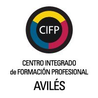
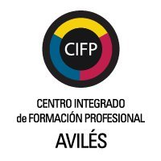

Sobre mí
Perfil
De personalidad optimista y tranquila. Soy riguroso a la hora de trabajar, buen compañero y tengo buena predisposición a adaptarme a cambios en el entorno laboral, así como a sus requerimientos e imprevistos.
Formación académica
CFGS en desarrollo de aplicaciones web (DAW) | En curso
CFGS en desarrollo de aplicaciones multiplataforma (DAM)
Bachillerato de modalidad científico-tecnológica
Formación complementaria
Nivel de inglés C1
Certificado de profesionalidad en desarrollo de aplicaciones web
Nivel de Alemán A1 | A2 en curso
Curso online de desarrollo web
Experiencia profesional
De personalidad optimista y tranquila. Soy riguroso a la hora de trabajar, buen compañero y tengo buena predisposición a adaptarme a cambios en el entorno laboral, así como a sus requerimientos e imprevistos.
 
